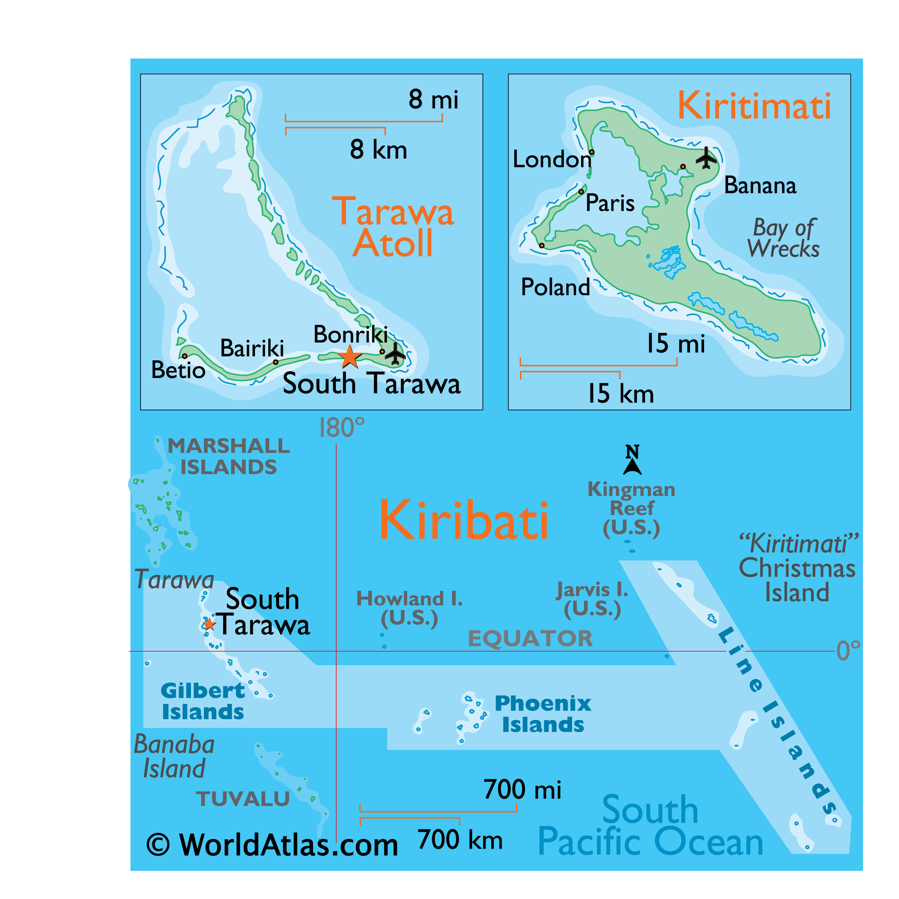

Kiribati is made up of three distinct island groups -- the Gilbert Islands, the Line Islands, and the Phoenix Islands. The first Austronesian voyagers arrived in the Gilbert Islands as early as 3000 B.C., but these islands were not widely settled until about A.D. 200 by Micronesians. Around 1300, Samoans and Tongans invaded the southern Gilbert Islands, then known as Tungaru, bringing Polynesian cultural elements with them.

Kiribati is the only country in the world to be in all four hemispheres. Kiribati people have a rich history of navigation using stars, waves, and birds, which they used long before modern maps and GPS. South Tarawa, the capital city, is one of the most densely populated areas in the Pacific, with overcrowding leading to issues like limited freshwater and sanitation challenges. Te Oreano is a traditional sport in Kiribati, where opposing teams will throw a heavy ball to one another, each trying to catch and toss it back without dropping the ball or getting injured.